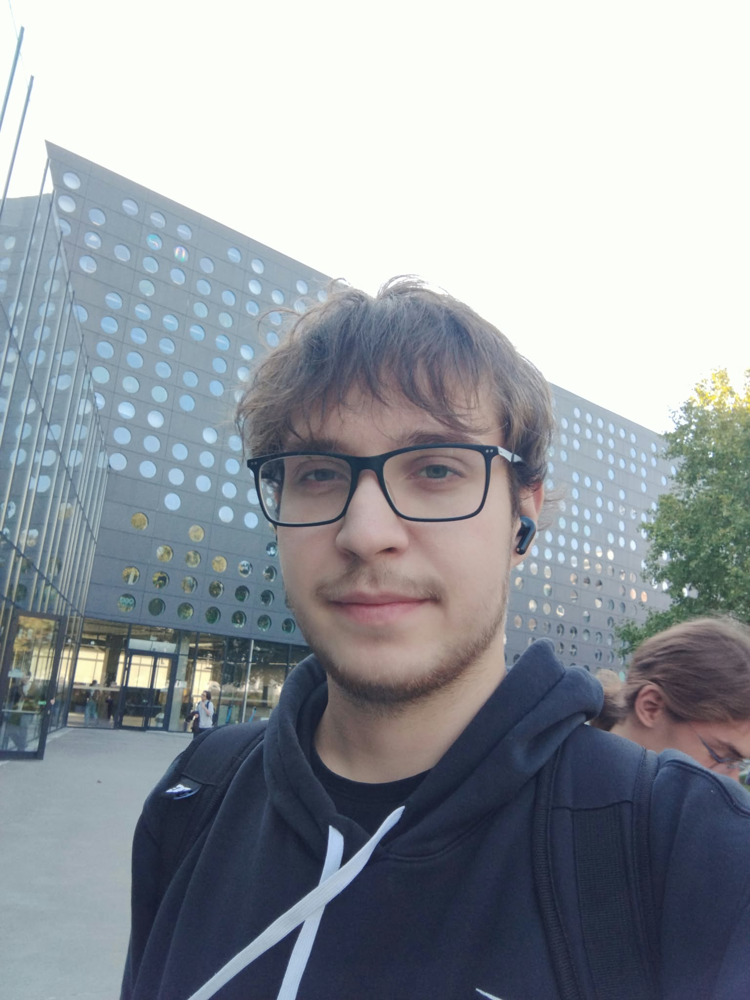

Indywidualne tempo
Skupiamy się na Twoich celach i dopasowujemy poziom trudności do aktualnych umiejętności.
Studiuję Informatykę Techniczną na Politechnice Wrocławskiej i pomagam oswoić matematykę oraz programowanie — bez niepotrzebnego stresu.
Umów pierwsze zajęcia ↗
Student Informatyki Technicznej · PWrWiem, że kiedy temat nie klika, kolejne zadania potrafią tylko zwiększyć frustrację. Dlatego zaczynamy od znalezienia miejsca, w którym pojawia się problem, a potem budujemy zrozumienie od podstaw.
Na zajęciach możesz zadawać pytania, prosić o inne wyjaśnienie i popełniać błędy. To naturalna część nauki, a nie powód do wstydu.
Chcę, żebyś z czasem coraz więcej potrafił lub potrafiła zrobić samodzielnie — nie tylko odtworzyć rozwiązanie z lekcji.
Skupiamy się na Twoich celach i dopasowujemy poziom trudności do aktualnych umiejętności.
W programowaniu analizujemy kod i błędy, a w matematyce pokazujemy, skąd biorą się kolejne kroki.
Po zajęciach wiesz, co zostało opanowane i na czym warto skupić się dalej.